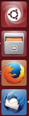

Unity Startmenü
Dieser Artikel wurde für die folgenden Ubuntu-Versionen getestet:
Ubuntu 16.04 Xenial Xerus
Ubuntu 14.04 Trusty Tahr
Zum Verständnis dieses Artikels sind folgende Seiten hilfreich:
Das Unity-Startmenü¶
 Im linken Bereich der Arbeitsfläche ist das Startmenü (englisch: launcher) angeordnet, hier können Anwendungen aufgerufen (gestartet), sogenannte Favoriten hinzufügt bzw. auch nicht mehr gewünschte Starter entfernt werden. Die Bedienung kann sowohl mit der Maus als auch teilweise mit der Tastatur erfolgen.
Anwendungen aufrufen¶
Neben den festen Funktionen im Startmenü werden hier die angezeigten Anwendungen aufgerufen, deren allgemeiner Zustand kontrolliert, deren Fenster gesetzt, Hinweise angezeigt und ggf. auf erforderliche Eingriffe durch den Benutzer aufmerksam gemacht.
Anwendung hinzufügen¶
Um eigene Anwendungen in das Startmenü von Unity dauerhaft hinzuzufügen, kann wie folgt vorgegangen werden:
Man verschiebe mit gedrückter  die Desktop-Datei einer Anwendung aus:
die Desktop-Datei einer Anwendung aus:
der Dash-Startseite
dem Verzeichnis /usr/share/applications
dem Verzeichnis ~/.local/share/applications (siehe eigene Starter)
in das Startmenü. Danach kann diese Anwendung zukünftig aus diesem Menü aufgerufen werden.
| Dialog zum Hinzufügen eines Starters |
Alternativ kann auch auf das im Startmenü angezeigte Icon einer laufenden Anwendung mit der rechten Maustaste  geklickt und dann im erscheinenden Dialog die Option "Im Starter behalten" gesetzt werden. Zum Entfernen braucht nur das Häkchen wieder deaktiviert zu werden.
geklickt und dann im erscheinenden Dialog die Option "Im Starter behalten" gesetzt werden. Zum Entfernen braucht nur das Häkchen wieder deaktiviert zu werden.
Anwendungen sortieren¶
Falls die Sortierung der Anwendungen (von oben nach unten) nicht zufriedenstellend ist, kann die Reihenfolge geändert werden.
Unity 2D:
Mit der das Icon der Anwendung klicken und den Mauszeiger eine Sekunde lang an derselben Stelle halten, bis sich das Icon bewegt. Dann kann es bei weiterhin gedrückter innerhalb der Leiste nach oben oder unten verschoben werden.
Unity 3D:
Mit der das Icon der Anwendung klicken, mit gedrückter in Richtung Desktop aus dem Startmenü herausziehen, an der gewünschten Stelle wieder einsortieren und die Maustaste wieder loslassen.
Alternativ kann dieses auch im Terminal ausgeführt werden, siehe dazu die Beschreibung unter Einstellungen im Unity Konfigurations-Editor. Zu Ausnahmen siehe Funktionen im Startmenü.
Anwendung suchen¶
Sind viele Starter im Startmenü abgelegt, so sind diese nicht alle auf dem Monitor gleichzeitig sichtbar. Mit der  kann im Startmenü gescrollt werden, weitere Starter werden angezeigt, und der benötigte Starter kann ausgewählt werden.
kann im Startmenü gescrollt werden, weitere Starter werden angezeigt, und der benötigte Starter kann ausgewählt werden.
Startmenü ausblenden¶
Das Startmenü ist standardmäßig permanent eingeblendet. Das Verhalten des Startmenüs kann jedoch angepasst werden, was unter Autohide-Startmenü beschrieben wird.
Startmenü an den unteren Bildschirmrand verschieben¶
Wer das Startmenü lieber unten hat kann das mit folgendem Befehl erreichen:
gsettings set com.canonical.Unity.Launcher launcher-position Bottom
Funktionen im Startmenü¶
Die Funktionen (Icons) im Startmenü für
Dash-Startseite
Mülleimer
Arbeitsflächen
können als fester Bestandteil des Startmenüs nicht entfernt werden. Allerdings verschwindet der Arbeitsflächen-Umschalter nach einem Neustart, wenn man über die Compiz-Einstellungen die virtuelle Größe des Desktops auf 1x1 gesetzt hat.
Schnellstart¶
Dieses Icon öffnet den Schnellstart ("Dash-Startseite"). Am unteren Rand der Dash-Startseite befinden sich die Suchlinsen.
Der Schnellstart kann auch durch Antippen der linke Windows-Taste geöffnet werden.
Arbeitsflächen-Umschalter¶
Die Arbeitsflächen können mit der Tastenkombination
Strg +
Alt und einer der Pfeiltaste angewählt werden. Eine Bedienung mit der Maus ist auch möglich. Wird mit der auf diesen Starter geklickt, werden alle Arbeitsflächen verkleinert auf dem Monitor angezeigt. Jetzt kann eines der angezeigten verkleinerten Arbeitsflächen ausgewählt werden. Eine Rückkehr zur ursprünglichen Arbeitsfläche erfolgt durch erneutes Anklicken des Icon "Arbeitsfläche". Hier ist auch die ursprüngliche Arbeitsfläche dargestellt. Ab 14.04 muss der Starter erst in den Systemeinstellungen unter "Darstellung" -> "Verhalten" -> "Symbol zum Anzeigen des Schreibtischs zum Starter hinzufügen" aktiviert werden.
Mülleimer¶
Dieser Starter zeigt die beiden Zustände des Mülleimers an (siehe Beispiele).
| Leerer Mülleimer | Mülleimer mit Inhalt |
Zum Leeren des Mülleimers wird mit der darauf geklickt, um die Daten sofort zu löschen. Wird dagegen mit der auf den Mülleimer geklickt, öffnet sich vorher noch ein Nachfrage-Fenster.
Anzeige im Startmenü¶
Die Icons der Anwendungen zeigen im Startmenü unterschiedliche Zustände an. Die normale Anzeige beschränkt sich auf das Icon als solches, welches die Anwendung repräsentiert. Je nach Einstellung werden interne Hinweise und Warnungen, auch zu noch nicht aufgerufenen Anwendungen, signalisiert und nach dem Start die Zustände angezeigt.
Anwendungen starten¶
Durch Anklicken mit der werden die Anwendungen aufgerufen. Je nach Einstellung werden links bzw. rechts kleine Dreiecke eingefügt, und der Hintergrund um das Icon wechselt nach dem Starten der Anwendungen die Farbe.
Durch Anklicken mit der kann bei einigen Anwendungen (z.B. bei Firefox, Terminal) ein weiteres Fenster (Instanz) aufgerufen werden.
Nach dem Start¶
Sind mehrere Fenster einer Anwendung gestartet, kann man durch Klicken mit der auf das Icon alle Fenster zusammenhängend sichtbar machen (auch wenn diese auf verschiedenen Desktops liegen) und, durch Auswahl eines dieser Fenster, der Fokus auf dieses gelegt werden.
Sind Fenster einer Anwendung minimiert, werden diese wie bisher vom Desktop ausgeblendet, und es verbleibt als Indikator nur der Marker im Starter (siehe zweiter Kasten unten). Wird mit der auf diesen Starter geklickt, kann das Fenster wieder aufgerufen werden und erhält den Fokus.
Ist das Fenster dabei auf einem nicht sichtbaren Desktop (also nicht minimiert), kann der Desktop gewechselt werden, und das Fenster dieser Anwendung erhält den Fokus.
| Erläuterung zu den Icons im Startmenü | ||
| Icon | Erläuterung zum Icon | Fokus |
| Die Anwendung wurde nicht gestartet, und es ist kein Fenster vorhanden. | nein | |
| Die Anwendung wurde gestartet. Der Fokus liegt auf einer anderen Anwendung, oder das Fenster dieser Anwendung wurde minimiert (bzw. beides). | nein | |
| Die Anwendung wurde gestartet und liegt auf dem sichtbaren Desktop. | ja | |
| Die Anwendung wurde mehrfach gestartet, das kann auch mehr als dreimal sein, oder hat mehrere Fenster (Anzahl der linken Marker). Mitgezählt werden auch Hilfsfenster einer Anwendung, z.B.: bei gimp. | ja | |
| Die Anwendung wurde zweimal gestartet oder hat mehrere Fenster (Anzahl der linken Marker). Der Fokus liegt auf einer anderen Anwendung oder die Fenster dieser Anwendung wurden minimiert (bzw. beides). | nein | |
| Die Anwendung wurde in einer anderen Arbeitsfläche gestartet. | nein | |
Minimieren via Klick auf das Starter-Icon¶
Ab Ubuntu 14.04 ist es nach Ausführen des folgenden Befehls möglich, offene Fenster durch einen Klick auf das Starter-Icon zu minimieren:
gsettings set org.compiz.unityshell:/org/compiz/profiles/unity/plugins/unityshell/ launcher-minimize-window true
Um diese Funktion wieder zu deaktivieren, muß man den folgenden Befehl ausführen:
gsettings set org.compiz.unityshell:/org/compiz/profiles/unity/plugins/unityshell/ launcher-minimize-window false
Eigene Starter im Startmenü¶
In der Regel lässt sich jede Anwendung als Desktop-Datei in das Unity-Startmenü ablegen, um dort die Anwendung dann aufzurufen. Auch eigene Skripte können auf diesem Wege eingebracht werden.
Komplexere Starter sollten mit Hilfe einer eigenen .desktop-Datei erstellt werden, können von dort aber nicht in das Startmenü eingefügt werden, sondern müssen als Programm über die Dash-Startseite aufgerufen werden und von dort wie oben beschrieben eingefügt werden.
Möchte man den selbst erstellten Programmstarter um eine "Quicklist" erweitern, also um eine Sammlung von "Unterfunktionen", die man mittels aufrufen kann, dann sollte man sich zusätzlich mit dem Artikel Quicklists beschäftigen.
Problembehebung¶
3D-Eignung testen¶
Ob der eigene Rechner für die Anwendung von "Ubuntu 3D" geeignet und eingerichtet ist, sollte man zuerst im Terminal abfragen mit:
/usr/lib/nux/unity_support_test -p
Neben weiteren Informationen erhält man dann
Unity 3D supported: yes
Startmenü und Panel werden nicht angezeigt¶
Es kann vorkommen, dass trotz Eignungstest (siehe oben) nach einer frischen Installation bzw. nach einer Systemaktualisierung das Startmenü (und auch das Panel) nicht sichtbar ist. Dann sollte der "CompizConfig Einstellungs-Manager" aufgerufen und geprüft werden, ob die Option
gesetzt ist.
Um den CCSM ohne Panel aufrufen zu können, kann man sich folgenden Tricks behelfen, um ein Terminal innerhalb der grafischen Sitzung öffnen zu können: CCSM aktivieren im Forum. Der Umweg zum Terminal über die grafische Sitzung ist für die Ausführung von ccsm zwingend nötig, da dies ein grafisches Programm ist, welches nur innerhalb der grafischen Sitzung gestartet und bedient werden kann.
Seltener muss ein "Reset" verwendet werden, was in schwierigen Fällen jedoch weiterhilft.
Seit Ubuntu 12.10 hat sich der Befehl durch den Wechsel im Speicherort der Einstellungen von gconf auf dconf geändert.
Nach der Installation der dconf-tools[2] öffnet man ein Terminal[3] und gibt Folgendes ein, um Unity zurücksetzen:
gsettings reset-recursively org.compiz
Ist das Zurücksetzen der Icons in der Iconleiste (Panel) auch nötig, benutzt man
setsid unity unity --reset-icons
Nach dem Abmelden von der aktiven Sitzung und erneutem Anmelden ist der Ursprungszustand wiederhergestellt.
Links¶
Intern¶
Unity
 Übersichtsartikel
ÜbersichtsartikelUnity/Unity Desktop - Desktop-Menü und Applets bedienen
Unity/Unity Lenses - Lenses ("Suchlinsen") benutzen
Unity/Unity Arbeitsbereich - Anpassung von Verhalten und Aussehen
Unity/Unity Einstellungen - Konfiguration im Unity-Editor und im Terminal (Befehle und Funktionen)
Compiz Informationen zum Composite- und Fenstermanager
CCSM - der Einstellungs-Manager "CompizConfig"
 - Liste von vorgefertigten Startern
- Liste von vorgefertigten Startern - Erstellt mit Inyoka
-
 2004 – 2017 ubuntuusers.de • Einige Rechte vorbehalten
2004 – 2017 ubuntuusers.de • Einige Rechte vorbehalten
Lizenz • Kontakt • Datenschutz • Impressum • Serverstatus -
Serverhousing gespendet von